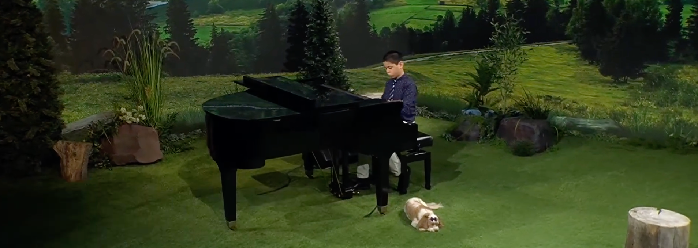
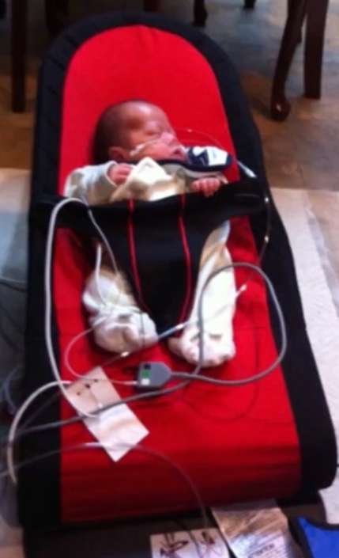
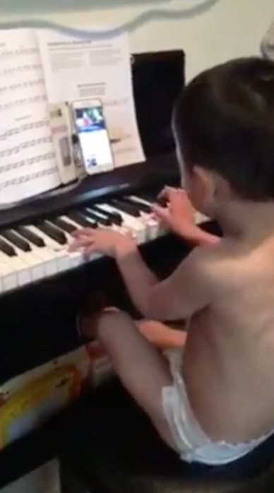

My name is Alan Jobe.
I was born as a micro preemie; you know, those little premature babies (the size of your hand) that people talk about online? I was one of those babies. I was born 24 weeks and one day, instead of the usual 40 weeks, with my mom having a placental abruption, and after a series of life-threatening circumstances that happened, God intervened and saved me from dying in the NICU like so many other babies. But even then, those babies that live in the NICU have mental problems or disabilities that don't allow them to function properly. Praise God, He miraculously made it so that I don't have any sort of long-term disabilities!

I stayed in the incubator for 4 months until after I was supposed to be born (which, by the way, is September 4), and for more than a year, I had to have oxygen and a pulse oximeter everywhere we went.Aunt Cherryl observed, "When he was more than a year old I knew that God had something special for him." He really did -- and still does.
Here is one example of this.
The people working at the NICU checked about imminent problems that I may have had, and one of those was that after some testing they determined that I was deaf. Which, of course, was false, or I wouldn't be playing music. But anyway, my aunt Cherryl observed that, even before she thought I could read, Mom said, "Ate, Alan can read!" Why? Mom could take out a book to read, and then she would say something like "Alan, what is this word?" -- which, by the way, could be any word, even 4 syllable words -- and then I would point to the word on the page of the book. Aunt Cherryl observed this and said, "Hmmm... maybe Alan just knows the books that Bobet reads to him." So aunt Cherryl got brand new books, did the same procedure, and -- would you believe it -- I pointed to the correct words!
Now the interesting thing was that I could not bear to hear literally ANY sound for more than a year. Aunt Cherryl said that "he kept on closing his ears... he would scream." Yes, scream. My father remembers that vividly. Also, because of that I would not be able to stay too long in places like museums, and so I would say, when I was able to talk, "Exit! Exit!" because I wouldn't bear the noise.
That was just one of the problems I had. But I am so glad that God saved me from all these problems and now I am a healthy pre-teen with no disabilities, to speak of.

My first instrument, ever, that I got in contact with, was the violin. That didn't go too well, as I was running around all over the place trying to play the violin. When I was around 2, though, I got acquainted with the piano. And I picked it up pretty quick! The piano would go on to become my sole instrument, with even more recordings with it than even me singing while playing the piano!In 2024, I started going to 3ABN for their Kids Christmas program. It was very enjoyable, with me playing 8 songs. After that, I got scheduled for a Kids X-Press, and at a turn of events, I was asked by Aunt Francine to be the new cohost! That was really enjoyable as well. Later I was able to go do Kids Praise, which is pretty similar to Kids Christmas, only no Christmas songs! I also did Jesus My Light, bringing my guitar. Later programs included Tiny Tots and Three Angels for Kids. (For Tiny Tots I literally had to play 60 short songs for the little kids! So you can imagine that it's stressful.) On Kids Praise I have done quite a few solo pieces, but also a bunch of collaborations, including 2 with good friend and rising star Sam Pio. (Check out her website at sampioofficial.com). Also, we did 4 songs with the 3ABN Kids Choir and those turned out pretty well.
I don't know what God has in store for my life, but I know that whatever He has got going is going to be good!!